PNLD 2026 · EDUCAÇÃO INFANTIL
Histórias que
ensinam brincando
Quatro obras aprovadas para a primeira infância. Cada uma tem seu jeito de conversar com a criança e de apoiar quem ensina. Veja as obras e escolha com calma.
Conheça as obras ↓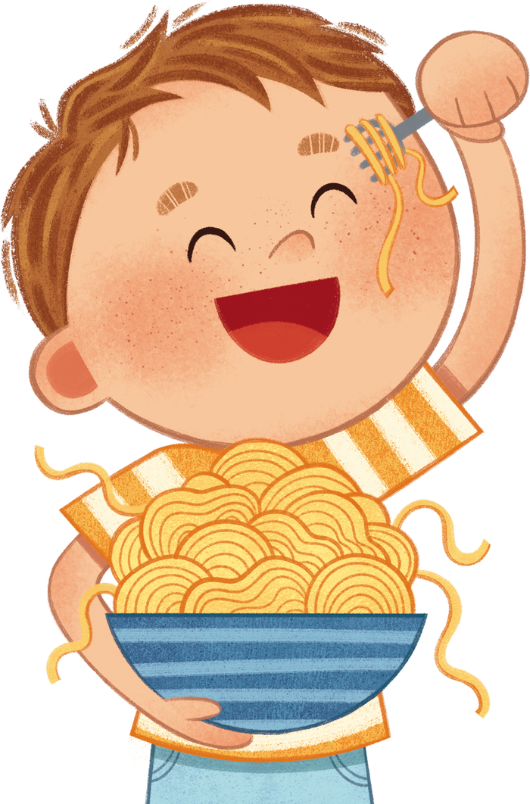
Código PNLD 20260504 P26 01 01 000 001
Comer, comer
Uma história para ser saboreada!
Uma família cheia de sabores e preferências é o ponto de partida de Comer, comer, de Simone Bandeira, com ilustrações de Isa Sonntag. Com rimas, ritmo e ilustrações expressivas, a obra transforma situações do cotidiano em uma narrativa divertida sobre gostos individuais e momentos de convivência em família, em que cada um quer comer o que mais deseja, sem deixar resto e sem muito zum-zum-zum.
Ler mais
Conheça a obra em detalhes
A obra apresenta diferentes personagens por meio de suas preferências alimentares, utilizando frases curtas, rimas e associações entre pessoas e alimentos. A construção ritmada do texto favorece a leitura em voz alta, enquanto as ilustrações complementam a narrativa e ajudam a contextualizar os personagens e as situações apresentadas.
A reunião da família à mesa amplia a dimensão afetiva da história, aproximando a narrativa das experiências cotidianas das crianças.
Aspectos literários e pedagógicos
- Linguagem: rimas, ritmo, frases curtas e associações entre personagens e alimentos.
- Texto e ilustração: integração entre elementos verbais e visuais para a construção de sentidos.
- Temas: preferências individuais, alimentação cotidiana, relações familiares e convivência.
- Possibilidades de mediação: leitura expressiva, identificação de personagens e rimas, ampliação do vocabulário e conversas sobre gostos e experiências familiares.
A obra oferece oportunidades para explorar a linguagem e a convivência por meio da literatura, respeitando a diversidade de preferências e evitando reduzir a leitura a uma abordagem exclusivamente nutricional.
- FamíliaAlegre e unida
- DesejosO que mais deseja
- BrincadeiraHumor e ritmo
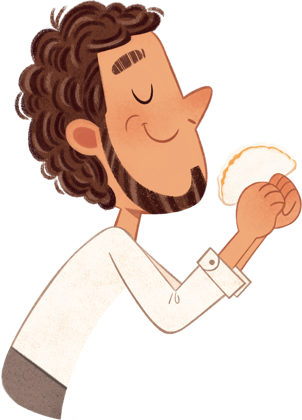
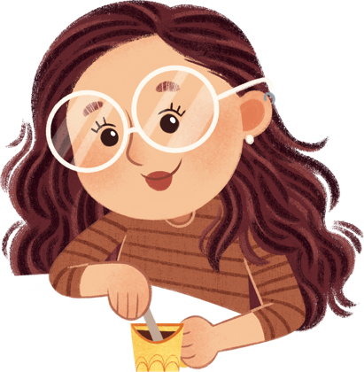
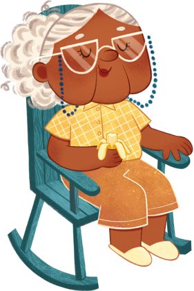
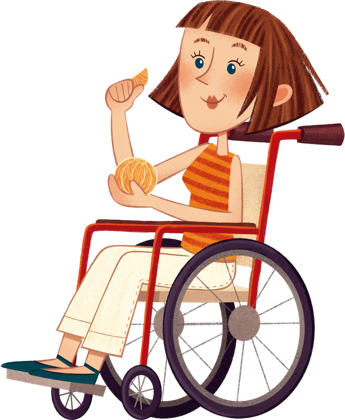
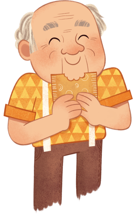
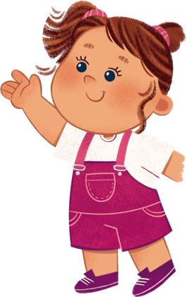
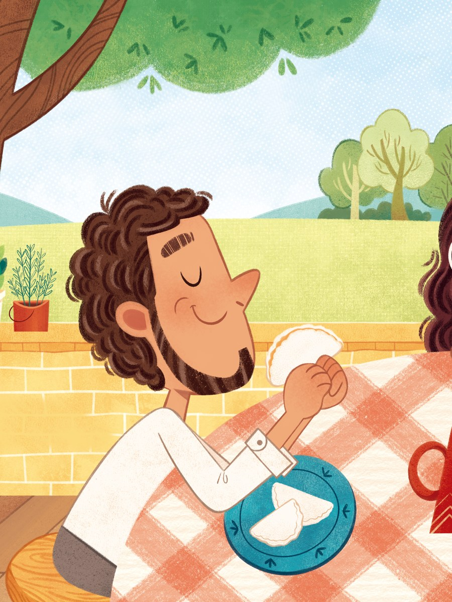
Tapioca · p. 6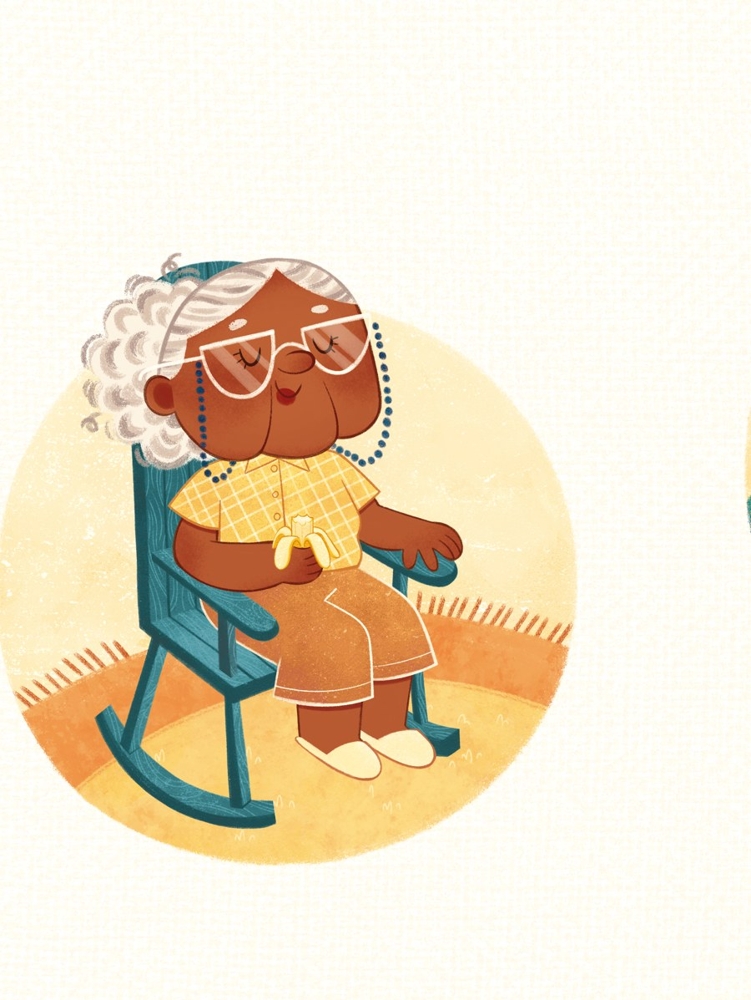
Banana · p. 8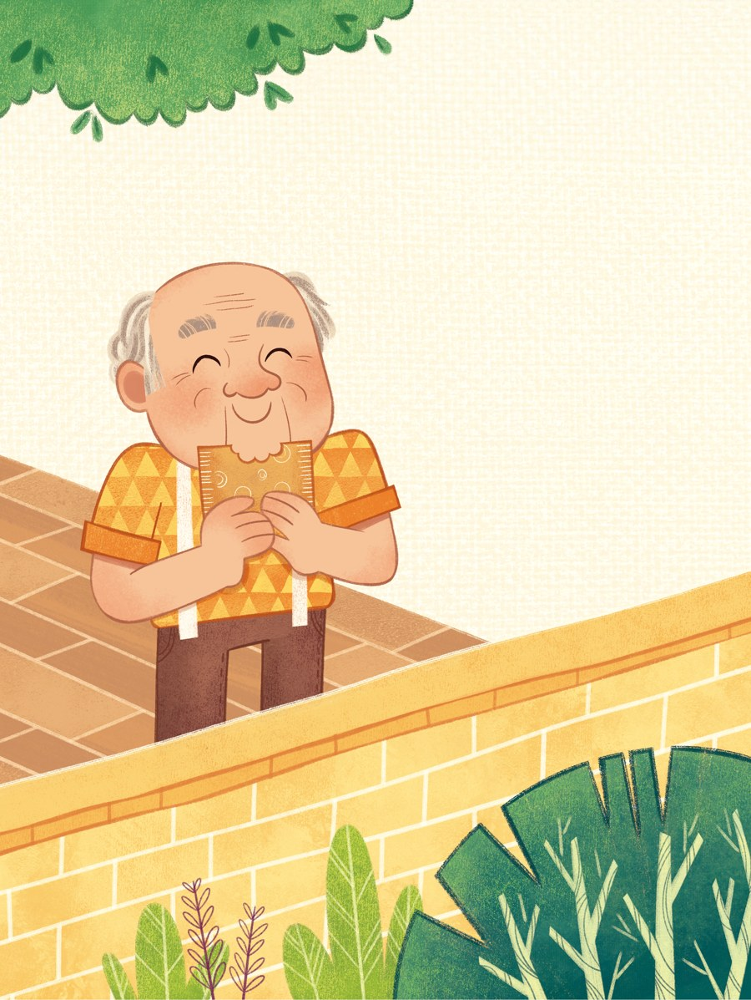
Pastel · p. 11Conteúdo digital
- Autoria
- Simone Bandeira
- Ilustração
- Isa Sonntag
- Editora
- Grafset
- Formato
- 16 p. · 21 × 24 cm
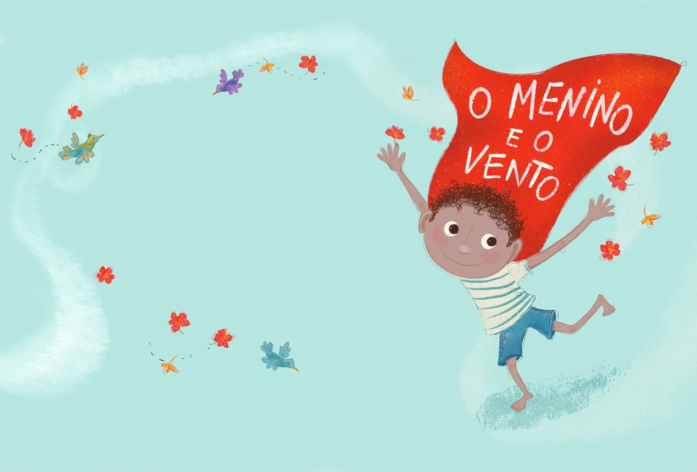
Código PNLD 20260505 P26 01 02 000 002
O menino e o vento
Natureza, imaginação e brincadeira!
Em O menino e o vento, de Manu Coutinho, com ilustrações de Juliane Engelhardt, o vento se torna companheiro das brincadeiras de um menino. Em uma narrativa poética, os movimentos da natureza participam de diferentes experiências do cotidiano infantil, convidando o leitor a descobrir possibilidades de brincar, imaginar e explorar o ambiente.
Ler mais
Conheça a obra em detalhes
A narrativa constrói uma relação de amizade e brincadeira entre o menino e o vento. Bola, balanço, dança, barquinhos de papel, pipa e outros elementos do cotidiano aparecem em situações nas quais o vento movimenta objetos e participa das experiências da criança.
O texto utiliza construções breves e repetições que contribuem para o ritmo da narrativa. As ilustrações têm papel importante na construção de sentidos, representando visualmente os efeitos do vento por meio do movimento dos objetos e dos elementos do ambiente.
Aspectos literários e pedagógicos
- Linguagem: construção poética, frases curtas e repetição de estruturas.
- Texto e ilustração: representação visual dos efeitos e movimentos do vento.
- Temas: imaginação, brincadeira, natureza, movimento e exploração do ambiente.
- Possibilidades de mediação: leitura dialogada, observação dos efeitos do vento, exploração de movimentos corporais e compartilhamento de experiências de brincadeiras.
A obra permite aproximar a experiência literária da observação do mundo e da imaginação infantil, favorecendo situações em que as crianças possam explorar, criar e construir interpretações próprias.
- NaturezaÁgua e terra
- DescobertaBrincar de muitos jeitos
- ImaginaçãoO vento vira brincadeira
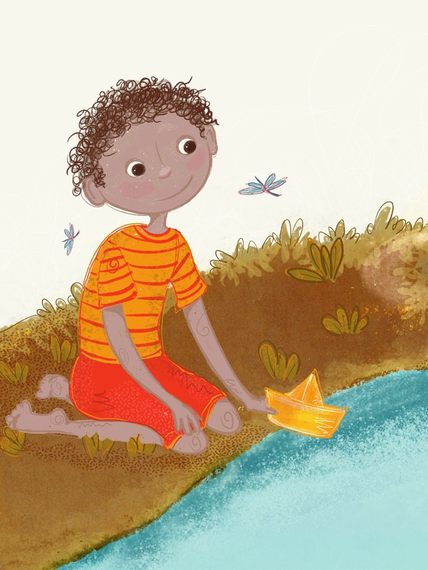
Barquinhos · pp. 20-21
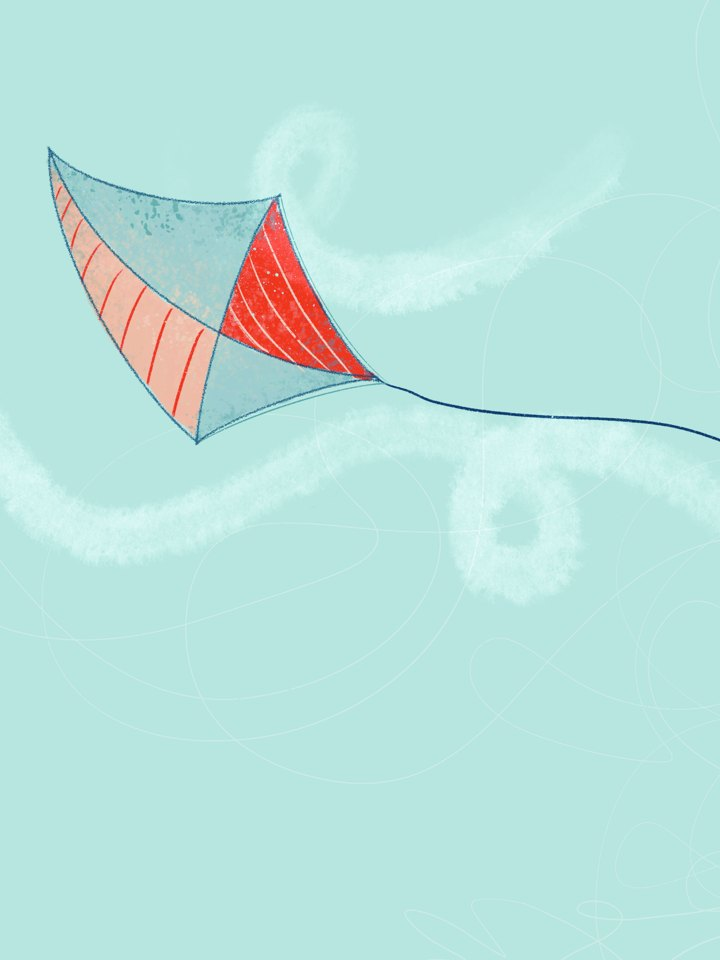
Pipa · pp. 22-23
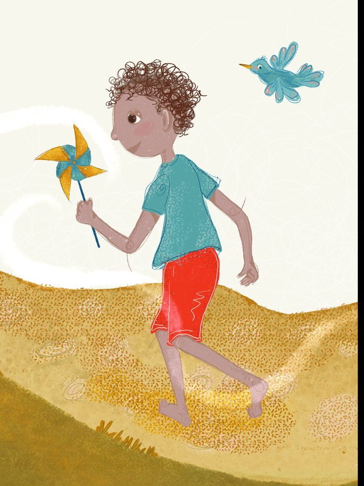
Catavento · pp. 26-27
Conteúdo digital
- Autoria
- Manu Coutinho
- Ilustração
- Juliane Engelhardt
- Editora
- Grafset
- ISBN
- 978-65-6086-002-5
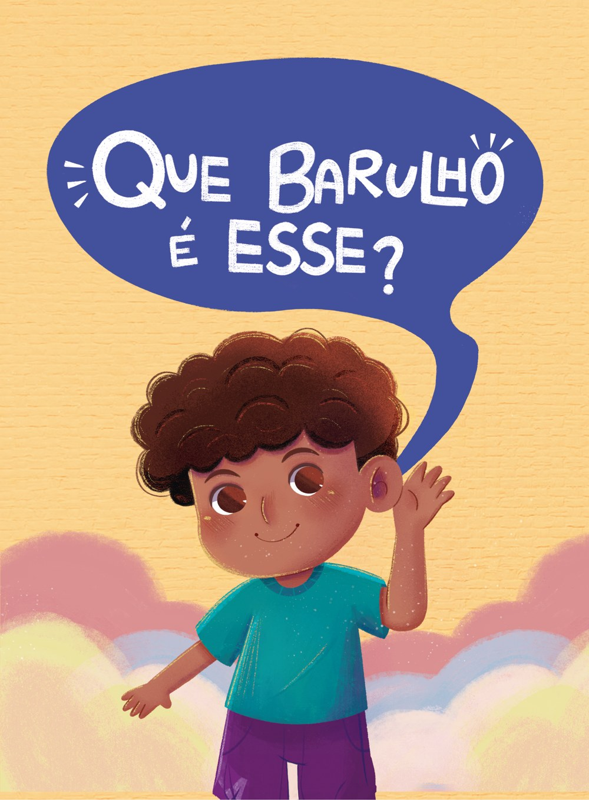
Código PNLD 20260054 P26 01 01 000 001
Que barulho é esse?
Uma aventura de sons para ouvir!
Que sons fazem parte do nosso cotidiano? Em Que barulho é esse?, de Simone Bandeira, com ilustrações de Thaís Castro, as crianças são convidadas a descobrir diferentes sons por meio de uma narrativa marcada por onomatopeias, ritmo e ilustrações expressivas. Uma experiência literária que aproxima escuta, curiosidade e imaginação.
Ler mais
Conheça a obra em detalhes
A narrativa apresenta uma sequência de sons presentes em diferentes situações do cotidiano, como a chuva, o ronco, as batidas à porta, o trem, a cigarra, a ambulância, o celular e o sino. As onomatopeias ganham destaque visual, aproximando a leitura da experiência sonora e criando ritmo para a narrativa.
A relação entre palavras e ilustrações ajuda o leitor a identificar as situações representadas, formular hipóteses e associar pistas visuais aos sons. O encerramento, com o som do coração, aproxima a experiência auditiva da percepção do próprio corpo.
Aspectos literários e pedagógicos
- Linguagem: onomatopeias, repetição sonora, ritmo e exploração expressiva das palavras.
- Texto e ilustração: associação entre representações visuais e sons do cotidiano.
- Temas: escuta, curiosidade, imaginação, ambiente sonoro e percepção corporal.
- Possibilidades de mediação: leitura em voz alta, antecipação dos sons, jogos de escuta, imitação sonora e identificação de fontes de som no ambiente.
A obra oferece possibilidades para explorar a oralidade, a percepção sonora e a imaginação, valorizando a participação das crianças e suas diferentes interpretações durante a leitura.
- Chuva e tremPIM PIM · PIUÍÍÍ
- AmbulânciaUÓÓ
- CoraçãoTUM TUM TUM
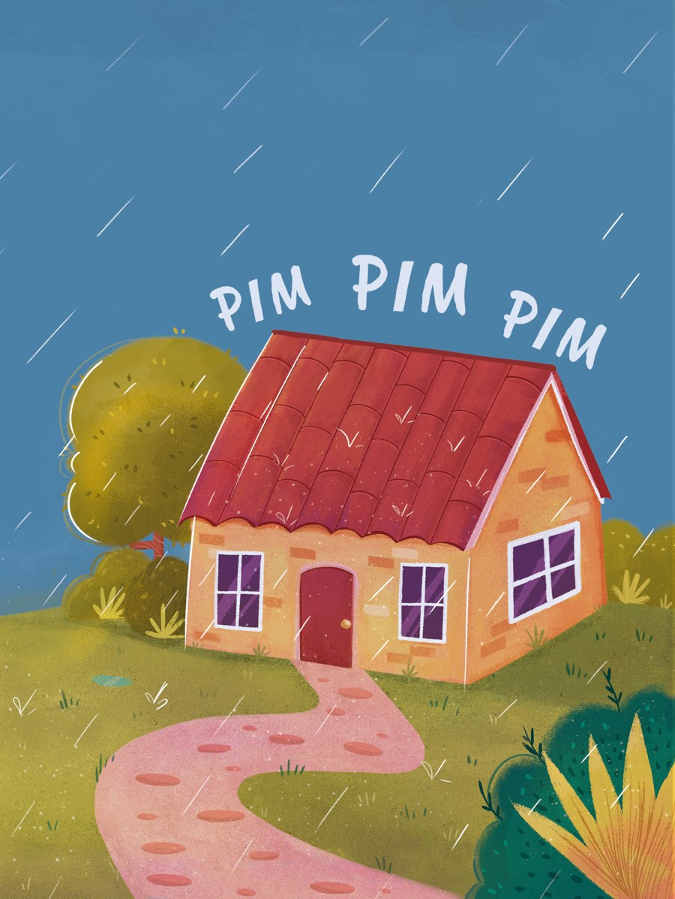
Chuva · p. 6-7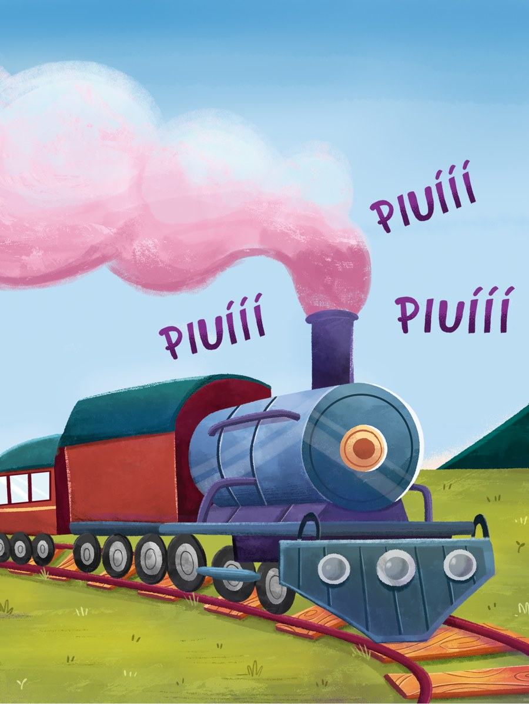
Trem · p. 12-13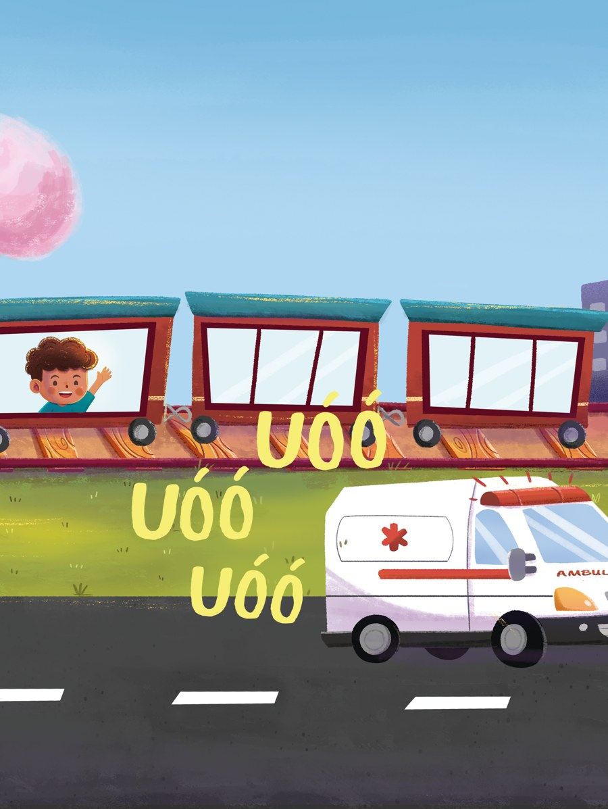
Ambulância · p. 16-17Conteúdo digital
- Autoria
- Simone Bandeira
- Ilustração
- Thaís Castro
- Editora
- MVC Editora
- ISBN
- 978-85-7951-480-7
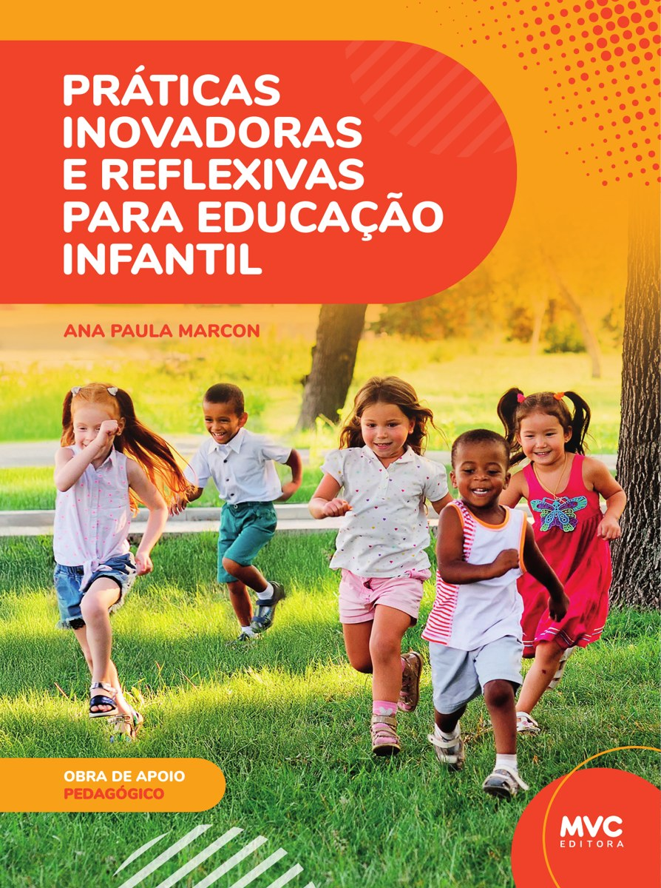
Código PNLD 20260331 P26 01 03 000 003
Práticas inovadoras e reflexivas
Para quem ensina a primeira infância
Como qualificar as práticas pedagógicas na Educação Infantil? Em Práticas inovadoras e reflexivas para Educação Infantil, Ana Paula Marcon aborda concepções de criança e infância, currículo, cuidado, brincadeira, documentação pedagógica, projetos, inclusão e avaliação. A obra oferece fundamentos para refletir sobre o papel do professor e a organização das experiências educativas na primeira infância.
Ler mais
Conheça a obra em detalhes
Organizada em nove capítulos, a obra discute fundamentos e práticas que orientam o trabalho pedagógico na Educação Infantil. Entre os temas abordados estão as concepções de criança e infância, as relações entre cuidar, educar, brincar e aprender, o percurso educativo e o papel do professor.
O livro também explora a documentação pedagógica, as propostas didáticas por meio de projetos, a presença das artes e da literatura no cotidiano infantil, a criação de ambientes inclusivos e o processo avaliativo.
A documentação pedagógica recebe atenção especial como recurso de observação, registro e reflexão. Ela permite tornar visíveis as experiências das crianças, acompanhar seus percursos e subsidiar a revisão do planejamento e das intervenções pedagógicas.
Aspectos literários e pedagógicos
- Concepções de criança e infância: reflexão sobre as formas de compreender as crianças e organizar o trabalho educativo.
- Currículo e práticas pedagógicas: articulação entre cuidar, educar, brincar e aprender.
- Documentação pedagógica: observação, escuta, registro, interpretação das experiências e reflexão sobre a prática.
- Projetos, artes e literatura: possibilidades de organização de experiências educativas significativas.
- Inclusão e avaliação: atenção às diferenças, à participação das crianças e ao acompanhamento dos processos de aprendizagem.
Destinada a contribuir para a reflexão de professores e equipes pedagógicas, a obra relaciona fundamentos educacionais e desafios do cotidiano escolar, apoiando a análise das práticas e a construção de propostas mais intencionais e coerentes com as experiências das crianças.
- Educar e brincarCuidar e aprender
- DocumentarRevelar a aprendizagem
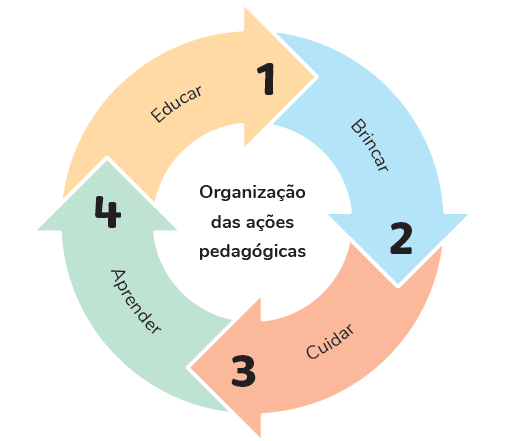
Figura 3 · p. 13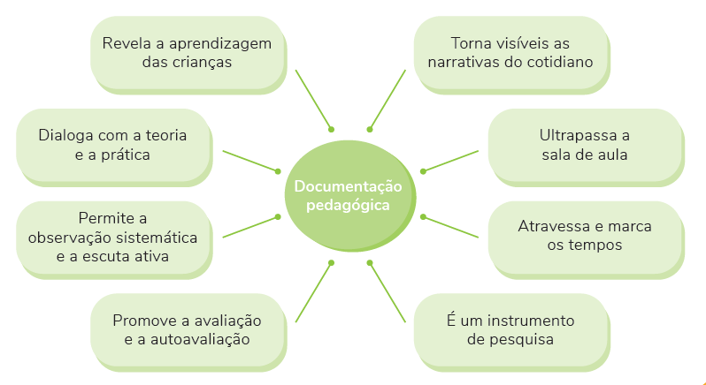
Figura 11 · p. 36Conteúdo digital
- Autoria
- Ana Paula Marcon
- Editora
- MVC Editora
- Edição
- 1ª edição · 2024
- ISBN
- 978-65-5365-318-4